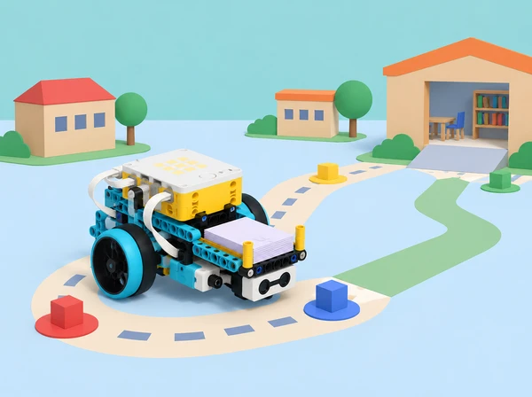
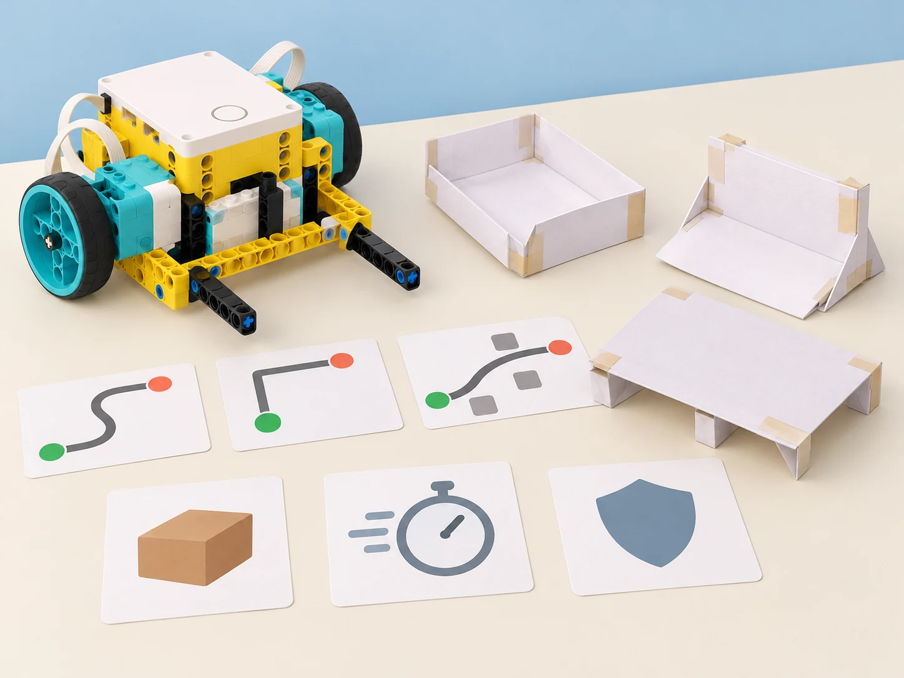
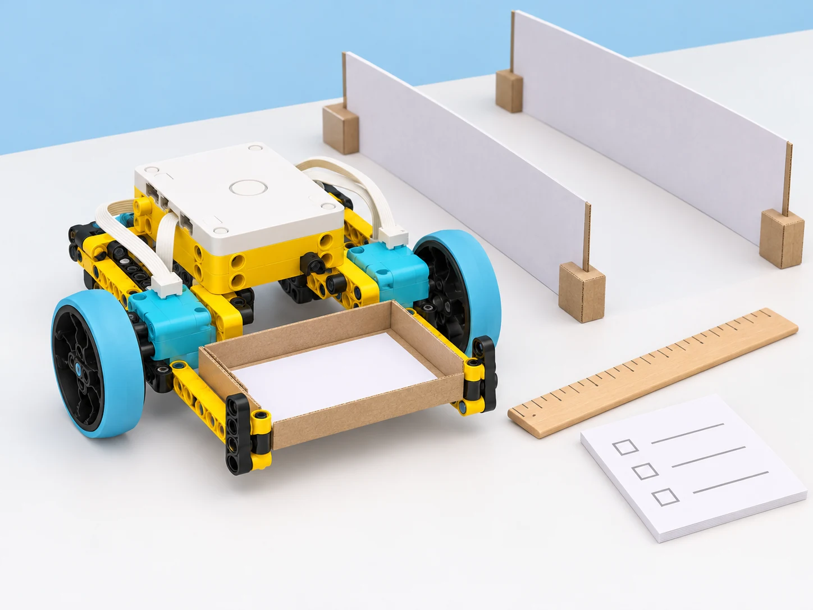
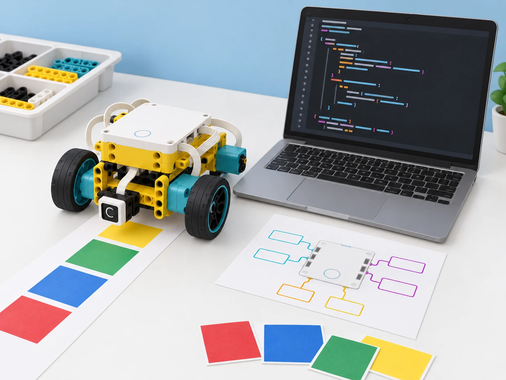
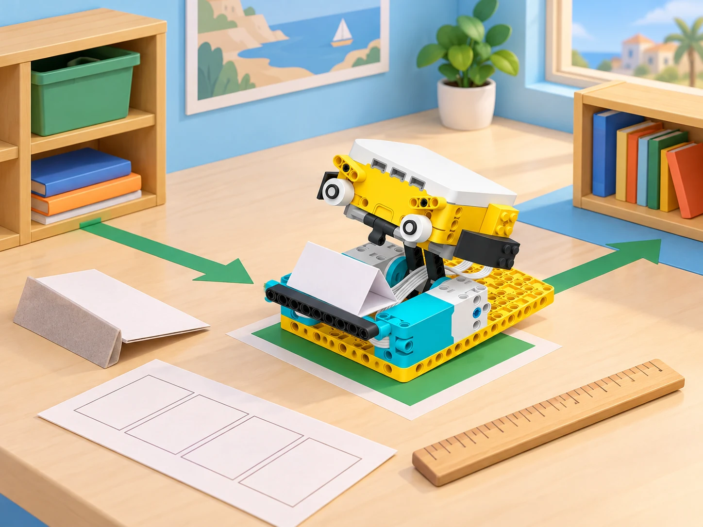
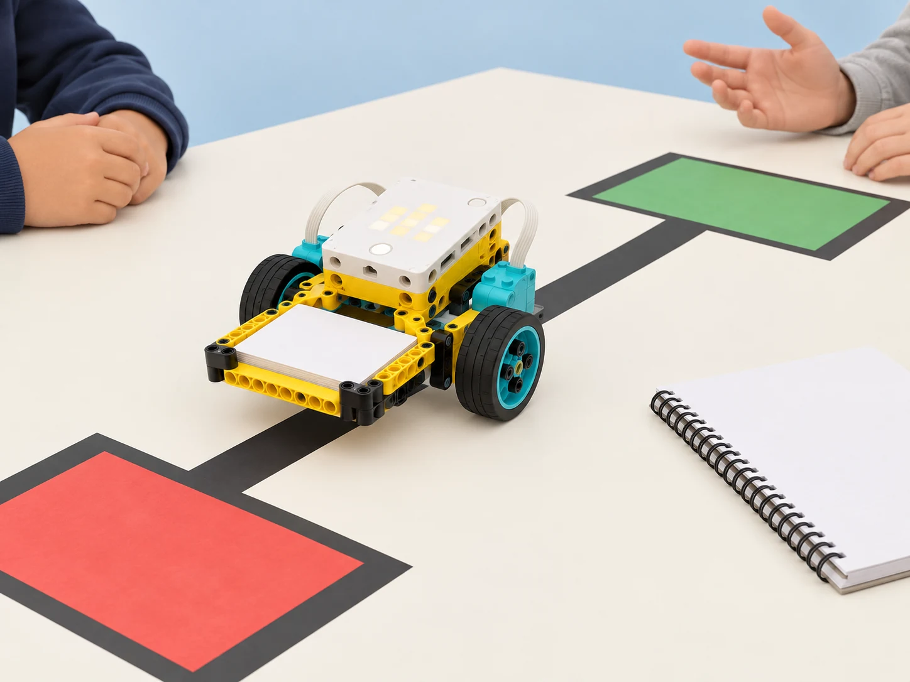

Un trajecte útil, un prototip que aprén
🏷️ Projecte culminant: transport i Python
🌱 Situació, repte i intenció
És una adaptació de la branca Transportation Project anunciada com a projecte culminant de LEGO Education *Introduction to Python Programming · Course 2*. El projecte mobilitza les competències de final de curs que la guia enumera: dissenyar i iterar un prototip, usar algoritmes, dades, sensors, bucles i condicions compostes, depurar maquinari/programari, escriure pseudocodi, descompondre el problema, documentar proves i feedback, considerar biaix/accessibilitat i comunicar la solució.
La guia accessible diu que el projecte ocupa entre 10 i 12 lliçons de 45–60 minuts i que té diari i rúbrica pròpia, però el PDF publicat no inclou un guió detallat d’aquestes sessions ni els descriptors de la rúbrica. Per això, aquesta seqüència de deu lliçons és una proposta didàctica original, traçada als resultats publicats, i no una adaptació pas a pas d’instruccions no disponibles.
🎯 Aprenentatges i vocabulari
- Investigar i reformular una necessitat de transport de materials de maqueta sense recopilar trajectes personals ni exposar persones a vehicles.
- Definir criteris mesurables (arribar a destí, mantindre la càrrega, respectar zona d’aturada) i restriccions de temps, peces, dimensions i seguretat.
- Descompondre ruta, seguiment de línia/fites, decisions, aturada, càrrega i feedback en funcions/subproblemes.
- Escriure en Python una seqüència de moviment amb funcions, variables, llistes, bucles, condicionals, lògica booleana i dades de sensor, segons els conceptes treballats en Course 2.
- Calibrar i registrar distància, color o contacte només quan el sensor disponible siga adequat; distingir dada mesurada, regla escrita per l’equip i decisió del programa.
- Depurar errors mecànics, de connexió, sintaxi, execució o lògica amb hipòtesis i proves controlades.
- Iterar a partir de resultats i comentaris, documentar els canvis i comunicar límits del prototip i evidència d’èxit.
- Treballar en equip amb rols rotatius i considerar si la interfície, la pista i la càrrega són accessibles a persones amb diferents capacitats.
Necessitat: dificultat observada i descrita sense atribuir defectes a una persona. Criteri: condició que defineix si la solució compleix el propòsit. Restricció: límit que el disseny ha de respectar. Iteració: canvi basat en una prova seguit d’una nova prova.
🧰 Materials i preparació
Per equip: set SPIKE Prime, hub carregat, app amb Python i consola, base mòbil de dos motors o estructura alternativa dissenyada per l’alumnat, sensor de color/distància/força només si ajuda a un criteri definit, fitxes grans simulant càrregues, cartó per a carrils i topalls, cinta de paper, regle, cronòmetre opcional, diari de projecte, llapis i ordinador per a la mostra. No calen sensors addicionals, càmeres, telèfons personals ni connexió a Internet durant la prova.
Les instruccions de muntatge i API es consulten en la versió de l’app i el set locals; les API de Python varien segons versió.
La docent prepara una zona tancada de taula o terra llis amb marges, una ruta de prova assequible a tots els equips, una càrrega fictícia i lleugera, una estació d’eixida i una destinació marcada amb forma i text gran. Preveu una ruta manual en quadrícula i un programa de simulació si el robot o un sensor fallen. Cap maqueta transporta objectes fràgils, menjar, líquids ni persones. Els motors s’aturen abans de manipular el robot i funcionen a baixa velocitat;
s’eviten desnivells, passadissos oberts i escales.
Durant les deu lliçons, roten quatre responsabilitats: investigació/documentació, construcció/seguretat, Python/proves i comunicació/accessibilitat. Totes les persones han de tenir oportunitat de llegir o explicar una part del programa i una evidència. La docent fa minirevisions al final de les lliçons 2, 4, 6 i 8 perquè el projecte puga redirigir-se sense perdre el calendari.
📅 Seqüència didàctica
Escoltar, observar i definir el repte (45–60 min)
Fase 1 · Activem i prediem
Presenteu el mandat: traslladar materials lleugers entre dos punts d’una maqueta de classe amb un prototip SPIKE. Useu un escenari escolar fictici; no pregunteu qui porta materials a casa ni com arriba a escola. Predigueu quines condicions farien clara i ordenada l’entrega.
Fase 2 · Explorem i construïm
Examineu una escena de maqueta o parleu amb una persona adulta voluntària sobre què fa que una entrega siga clara i accessible. Registreu necessitats anònimes com a observacions i preguntes, no com a opinions sobre persones.
Fase 3 · Expliquem i registrem
Redacteu una frase de problema, usuari, objectiu, dos criteris d’èxit i tres restriccions. Un criteri possible és arribar a la destinació en 3 de 4 intents, sense caiguda de la càrrega i amb aturada manual accessible.
Fase 4 · Apliquem i millorem
Decidiu si la ruta seguirà una línia de cinta, fites de color o ordres prefixades. No pressuposeu cap sensor fins a comprovar la dotació; ajusteu els criteris si el material disponible no els pot verificar.
Fase 5 · Comprovem i reflexionem
Investigar dades, materials i restriccions (45–60 min)
Fase 1 · Activem i prediem
Dibuixeu l’origen, els trams, els girs, la zona de càrrega, la destinació i els punts d’aturada. Predigueu quins materials o dades poden limitar la ruta.
Fase 2 · Explorem i construïm
Mesureu amplària de pista i longitud dels trams; descriviu la càrrega com a lleugera o mitjana sense necessitat de bàscula. Consulteu les funcions del sensor a la Knowledge Base i anoteu port, unitat i rang llegible.
Fase 3 · Expliquem i registrem
Compareu dues solucions manuals i dos mecanismes de maqueta, com base amb safata, empenyedor o pinça sense tancament arriscat. Registreu estabilitat, accessibilitat i peces necessàries; no copieu models protegits.
Fase 4 · Apliquem i millorem
Reviseu els criteris amb la informació recollida i anoteu allò que no s’ha pogut comprovar. Afegiu la restricció d’utilitzar només càrrega de prova lleugera.
Fase 5 · Comprovem i reflexionem
Generar opcions i triar amb criteris (45–60 min)
Fase 1 · Activem i prediem
Cada membre dibuixa una idea individual sense discutir-la ni jutjar-la. Predigueu quin criteri serà més difícil de satisfer.
Fase 2 · Explorem i construïm
Combineu aportacions i prepareu almenys tres conceptes diferents, inclosa una opció no motoritzada. Feu esbossos prou clars per comparar-los.

Fase 3 · Expliquem i registrem
Compareu cada idea per seguretat, estabilitat de càrrega, funcions Python, adaptació a usuaris, peces i facilitat de prova. Useu escala 1–3 amb comentaris; si una dada falta, marqueu-la com a desconeguda.
Fase 4 · Apliquem i millorem
Trieu una idea i anoteu el compromís que implica i una característica d’una alternativa que podríeu incorporar. Presenteu l’esbós a un altre equip i pregunteu què entén del criteri abans de construir.
Fase 5 · Comprovem i reflexionem
Planificar el programa i els casos de prova (45–60 min)
Fase 1 · Activem i prediem
Representeu una ruta i predigueu què pot fallar: sensor absent, fita desconeguda, càrrega desplaçada o necessitat d’aturada manual.
Fase 2 · Explorem i construïm
Descomponeu el programa en iniciar, conduir tram, llegir fita, corregir, arribar/aturar i comunicar error. Creeu funcions per a les accions que realment es repeteixen.
Fase 3 · Expliquem i registrem
Dibuixeu l’algoritme o pseudocodi. Indiqueu on poden servir llistes de punts, condicions compostes, bucles, paràmetres de velocitat i registre de dades.
Fase 4 · Apliquem i millorem
Prepareu casos nominals i límit: ruta amb gir, color no assignat, càrrega ampla, inici mal orientat i aturada manual. Predigueu el resultat i què fareu si falla; deseu una còpia del pla.
Fase 5 · Comprovem i reflexionem
Construir el prototip i validar la mecànica (45–60 min)
Fase 1 · Activem i prediem
Abans de muntar, prediu què podria fer inestable la càrrega o dificultar un gir. Recordeu que el prototip transporta només materials lleugers de maqueta.
Fase 2 · Explorem i construïm
Construïu per subsistemes la base, el suport de càrrega i el sensor si escau. Proveu la safata buida i després amb càrrega de cartó molt lleugera; observeu recta i gir. No subjecteu la càrrega amb persones ni useu pinces que tanquen sobre dits.

Fase 3 · Expliquem i registrem
Amb el muntatge apagat, proveu manualment el recorregut si és segur. Anoteu encallaments, cables que arrosseguen, rodes que freguen o centre de càrrega alt.
Fase 4 · Apliquem i millorem
Escriviu una única ordre curta amb la funció API verificada; no intenteu encara un programa autònom complet. Dibuixeu la versió 1, anoteu què funciona i decidiu un ajust.
Fase 5 · Comprovem i reflexionem
Escriure el primer programa Python integrat (45–60 min)
Fase 1 · Activem i prediem
Predigueu com es dividirà el programa i quina informació necessitareu per depurar una ruta curta. Acordeu qui pot autoritzar l’arrencada i qui té el control de l’aturada.
Fase 2 · Explorem i construïm
Organitzeu constants i ports al principi, funcions amb noms clars al mig i seqüència principal al final. Comenteu les unitats de velocitat/distància i l’origen dels llindars.
Fase 3 · Expliquem i registrem
Programeu un tram, una aturada controlada i la seqüència cap al tram següent. Comproveu aïlladament cada sensor abans d’afegir-lo; si no està disponible, useu fites o ordres manuals identificades com a simulació.
Fase 4 · Apliquem i millorem
Useu una llista per a punts o accions si redueix repeticions i afegiu una condició per a dades no reconegudes. Executeu una ruta curta amb velocitat baixa, zona lliure i una persona responsable d’aturar; no feu el programa tan llarg que siga difícil de depurar.

Fase 5 · Comprovem i reflexionem
Calibrar, provar i depurar amb evidència (45–60 min)
Fase 1 · Activem i prediem
Trieu una causa probable d’una fallada: orientació, fricció, unitat, llindar, ordre, dada absent o funció API incorrecta. Escriviu què espereu observar si la hipòtesi és correcta.
Fase 2 · Explorem i construïm
Feu tres intents del mateix cas nominal amb inici i superfície constants. Afegiu després un cas amb fita absent o diferent.
Fase 3 · Expliquem i registrem
Anoteu lectura del sensor, valor esperat, resposta, aturada i variació. Classifiqueu l’error com a muntatge, connexió, sintaxi, execució o lògica.
Fase 4 · Apliquem i millorem
Canvieu una sola causa i repetiu. Si la consola no mostra error però el robot falla, reviseu l’especificació i la lectura abans d’assumir que el codi és correcte. Decidiu si cal continuar o simplificar l’abast.

Fase 5 · Comprovem i reflexionem
Revisar accessibilitat i millorar el sistema complet (45–60 min)
Fase 1 · Activem i prediem
Una parella d’un altre equip observa la pista i intenta seguir les instruccions sense ajuda. Predigueu quines barreres podrien dificultar l’ús: llegenda poc clara, color difícil de distingir o aturada difícil de trobar.
Fase 2 · Explorem i construïm
Comproveu si la meta té paraula o símbol a més de color, si hi ha alternativa quan el sensor no distingeix una marca i si la ruta evita exigir reflexos ràpids.
Fase 3 · Expliquem i registrem
Recolliu retorn amb frases d’evidència: «he vist…», «no he sabut…», «esperava…». Valoreu l’accessibilitat de l’artefacte, no l’habilitat personal de qui el prova.
Fase 4 · Apliquem i millorem
Trieu un canvi d’estructura, programa o instrucció. Actualitzeu el pseudocodi, apliqueu una edició cada vegada i torneu a executar dos casos.
Fase 5 · Comprovem i reflexionem
Tancar documentació, demostració i rúbrica (45–60 min)
Fase 1 · Activem i prediem
Reviseu què ha d’entendre l’audiència sobre el repte i predigueu quina evidència sustenta cada afirmació de la presentació.
Fase 2 · Explorem i construïm
Completeu el diari amb problema, criteris/restriccions, tres idees, diagrama, ports, codi comentat, pla/resultats de prova, fallada important, canvi, retorn i limitació.
Fase 3 · Expliquem i registrem
Prepareu una mostra de tres minuts: necessitat, usuari i criteris, construcció, fragment Python, proves repetides, millora i què no resol. Si el robot no està disponible, useu una imatge estàtica o simulació identificada com a tal.
Fase 4 · Apliquem i millorem
Autoapliqueu la rúbrica d’equip en Python, integració física, proves/depuració, accessibilitat i comunicació. Useu nivells inicial, en desenvolupament, competent i transferible amb una evidència concreta del diari.
Fase 5 · Comprovem i reflexionem
Fira de prototips i reflexió final (45–60 min)
Fase 1 · Activem i prediem
Delimiteu carril, càrrega i zona de públic i trieu una demostració curta. Predigueu quina condició de prova pot mostrar una limitació del prototip.
Fase 2 · Explorem i construïm
Prepareu l’estació i comproveu que l’aturada manual és fàcil de trobar. Manteniu la càrrega lleugera i el recorregut dins de la zona marcada.
Fase 3 · Expliquem i registrem
Presenteu almenys un cas d’èxit i una condició que el sistema no resol. Accepteu preguntes sobre dades, sensors, decisions, mecanisme i proves; no compareu equips per rapidesa ni per nombre de peces.

Fase 4 · Apliquem i millorem
Recolliu una nota concreta del públic i una pregunta respectuosa. Cada membre explica la seua contribució i una aportació d’una altra persona que haja canviat el projecte.
Fase 5 · Comprovem i reflexionem
🧪 Evidències i avaluació
La mostra inclou un prototip de transport per a fitxes o paquets buits i lleugers, programa Python que usa almenys una funció pròpia, un sensor SPIKE quan siga pertinent/disponible, i una parada; trajecte i instruccions accessibles; diari de disseny; pseudocodi/diagrama; codi comentat amb atribució; mapa de ports; taula amb criteri, intent, resultat, dada, unitat i ajust; documentació d’una fallada i la seua depuració; revisió entre iguals; estimació de límits/impacte; i una presentació de 3 minuts.
Rúbrica formativa (4 nivells per dimensió): ús de Python —programa poc estructurat / seqüència parcial / funcions i control de flux coherents / estructura documentada que es pot reutilitzar i justificar; integració física —muntatge o ports no verificats / acció bàsica / mecanisme i sensors responen als criteris / el grup explica calibratge i alternatives; prova/iteració —resultat anecdòtic / una prova registrada / casos variats i una revisió basada en dades / repeticions comparables, causes aïllades i límits explícits;
♿ Participació, accessibilitat i seguretat
El repte pot ser resolt en simulació, amb una maqueta estacionària o amb un vehicle de taula. La ruta es representa amb símbols, text ampliat, formes i colors redundants; es pot donar una ordre manual per a provar la lògica. No es fan enquestes identificables, no es registren domicilis ni trajectes de l’alumnat i no s’avalua capacitat física. Es recullen només dades del prototip i d’entrades sintètiques. Qualsevol observació sobre l’espai escolar s’anonimitza i es valida amb l’adult responsable.
Els motors funcionen en una zona controlada de baixa velocitat; cap equip prova al passadís, prop d’escales, persones o càrrega fràgil. En cas d’error, s’atura el robot abans de canviar peces o cables.
🔗 Referents i adaptació
El referent és el projecte culminant de Introduction to Python Programming · Course 2 de LEGO Education, que s’anuncia com a Environmental Impact or Transportation Project. La guia declara que els projectes tenen 10–12 lliçons de 45–60 minuts i inclouen documentació amb diari i rúbrica; també explicita disseny iteratiu, debugging de maquinari/programari, dades, sensors, condicions compostes, pseudocodi, descomposició, accessibilitat, biaix i presentació.
Aquest itinerari adapta la branca de transport a la logística de materials de maqueta de l’escola i ofereix un artefacte, dades, restriccions, proves, rols i rúbrica originals. El PDF consultable no desglossa el guió docent ni els criteris detallats del projecte de 10–12 lliçons, per tant no atribuïm a LEGO la seqüència de deu sessions ací creada ni afirmem que reproduïsca els seus materials privats. La construcció i l’API Python s’ajusten al set i la versió SPIKE presents al centre.